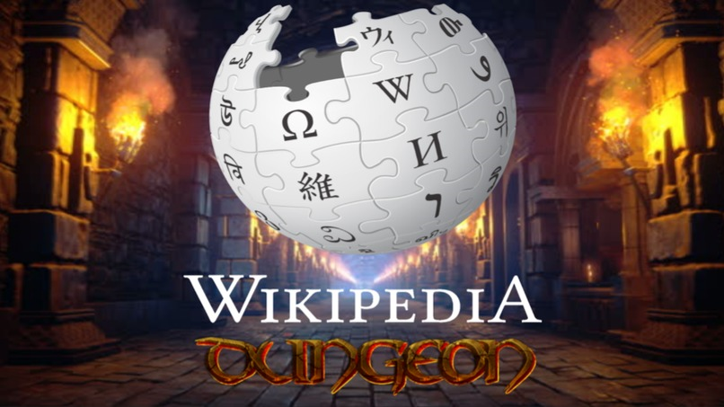

Ben Phillips - Official Website
| Home | About Me | Projects | Demos | Game Devblog |
|---|
Wikidungeon
April 2023
In a 36-hour coding competition, two friends and I created a proof-of-concept game that generates levels procedurally from wikipedia articles, allowing the website to be navigated through movement and level progression. As a re-interpretation of the article structure and link topology of websites, the game challenges conventional expectations for what a web browser can be. The project won first prize in the competition's general track.
It is, quite literally, a game engine that fetches a wikipedia page and then parses its content to procedurally build a dungeon level. Each section of the article becomes a room in a branching layout, while each hyperlink becomes an item found in the rooms. The link items are used to navigate to the article that they point to, which is used to generate a new level of the dungeon. As an aesthetic touch, rooms are also decorated with a random image from their section. In short, Wikidungeon is simultaneously one of the largest video game dungeons and one of the strangest web browsers ever created.
Devpost Page
|
ben.a.phillips@outlook.com
|
/in/ben-a-phillips
|
github.com/Jorbon
|
|---|